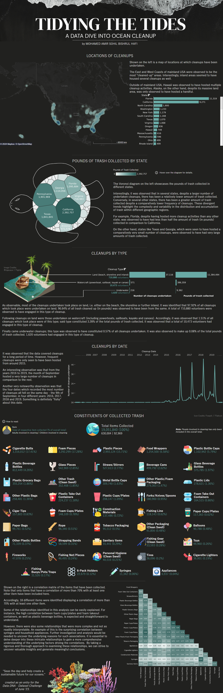

Tidying the Tides
19 million collected items, and where cleanup effort doesn't match cleanup need.

The Problem
For the DataDNA Dataset Challenge (June 2023), the brief was to take large-scale, multi-year marine cleanup records and turn them into a narrative dashboard revealing where, what, and how ocean pollution is actually being addressed across the US.
The dataset spans well over a decade of activity, though cleanup frequency wasn't remotely constant across it, with recorded cleanups staying thin before roughly 2015, after which volume is seen to pick up substantially. Any year-over-year comparison has to account for reporting density changing over time.
The Five Lenses
Maps cleanup locations, ranking states by cleanup count.
A separate ranking by pounds collected, deliberately kept apart from the location map to expose where the two rankings disagree.
Land, watercraft, underwater — cross-tabulated against volunteer counts and pounds collected.
2006-2019.
19M+ items broken down, plus a correlation matrix.
The Outcome
Florida hosted more cleanups than any other state (11,319) but collected under half the trash weight of California (1.1M vs. 2.4M lbs), while Texas and Georgia hosted comparatively few cleanups yet racked up some of the largest trash totals nationally.
Land cleanups dominate overall: 97.92% of all cleanup events, 96.64% of trash by weight, 710,880 of roughly 723,000 total volunteers. At the item level, just three categories — cigarette butts, foam pieces, plastic pieces — account for 50.4% of all 19,051,840 items collected. Underwater cleanups sit at the opposite end of the efficiency picture: they account for just 0.57% of all cleanup events but recover only 0.08% of total trash weight, the smallest return of any cleanup type relative to the volunteer effort involved.
The date data adds an unresolved curiosity, with the four single highest-volume cleanup days between 2016 and 2019 all falling on September 9th, across four consecutive years.
The four highest-volume cleanup days between 2016 and 2019 all landed on September 9th across four consecutive years.